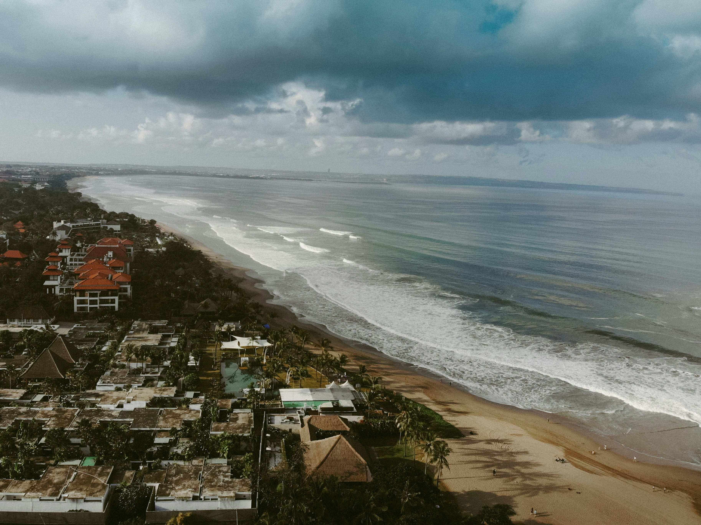

Top three places to visit in Bali
Ubud
Lose yourself among emerald rice terraces, ancient temples and a thriving arts scene — mornings spent wandering craft markets and afternoons in tranquil spas make Ubud feel like Bali’s soulful heartbeat.
Uluwatu
Perched on dramatic sea cliffs, Uluwatu offers jaw-dropping sunsets, cliff-top temples and high-energy Kecak dance performances — it’s raw coastal beauty with a touch of mystic drama.

Seminyak
From chic beach clubs and sunset cocktails to buzzing cafes, boutique shopping and surf-ready waves, Seminyak serve stylish Bali days that stretch into lively, unforgettable nights.